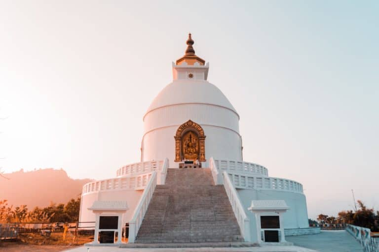
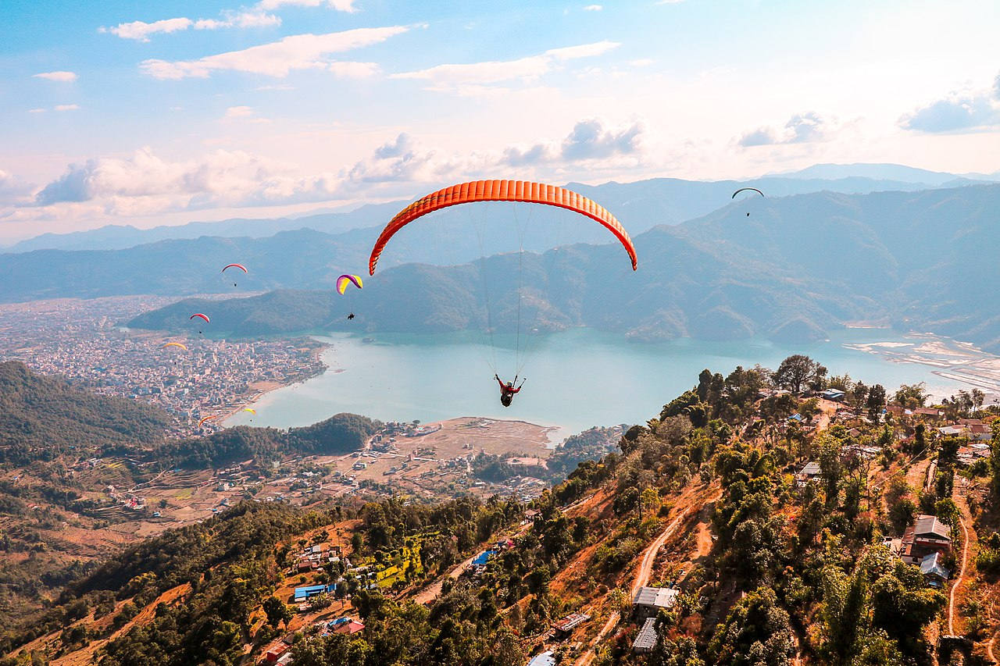

Lake
Pokhara (Nepali: पोखरा, Nepali pronunciation: [ˈpokʰʌɾa]) is a metropolitan city in Nepal, which serves as the capital of Gandaki Province.....

Pokhara (Nepali: पोखरा, Nepali pronunciation: [ˈpokʰʌɾa]) is a metropolitan city in Nepal, which serves as the capital of Gandaki Province.....

Shanti Stupa in Pokhara also called as Peace Pagoda is a stunning monument located on the Anadu Hill overlooking the mesmerising Phewa Lake with the charming Annapurna Mountain range in the backdrop. It is a popular tourist attraction and a striking landmark or a pleasant pit stop for the intrepid climbers......
Devi's Falls (Nepali: पाताले छाँगो) is a waterfall located at Pokhara in Kaski District, Nepal.[1][2].....

Sarangkot is Ward 18 of Pokhara, Kaski District, Nepal, after it was merged into the city in 2015. It is a popular tourist destination for those who arrive in Pokhara. At the 1991 Nepal census it had a total population of 5,060 with 1,010 individual households.[1]....

Nepal is famous for its amazing treks, but are so many other adventure activities to do in this wonderful country such as paragliding. In fact, Pokhara, Nepal is one of the top five commercial tandem paragliding locations in the world! Paragliding in Pokhara is well worth a spot on your Nepal bucket list.....
Please contact us if you need any help and we will get back to you as soon as possible.
The Sales and Technical Support offices are open: Mon-Fri 8:00am - 7:00pm.
Emergency Technical Support is available 24 hours a day, 7 days a week